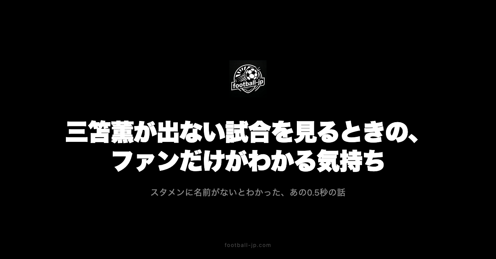

三笘薫 2026年まとめ｜シーズン成績・負傷・ジョーカー復帰・月間最優秀ゴール
プレミアリーグ23試合・3ゴール。数字だけを見れば派手さに欠ける。だが2026年の三笘薫は、月間最優秀ゴール3度目の受賞、W杯直前の左ハムストリング負傷、そして本大会への「ジョーカー復帰」論——1年を通して何度も話題の中心になった。football-jpが追いかけてきた一連の記事を時系列でまとめ、最終的にどうなったかの答え合わせまで1本に整理する。
【2026年11月追記】この記事は、2026年5月〜6月に書いた複数のコラム（月間最優秀ゴール3度目・負傷報道・ジョーカー戦術論・久保建英との比較・出ない試合のファンの気持ち）をまとめ直したものです。W杯2026（北中米大会）は2026年7月に終わりました。三笘薫がW杯にどう関わったか（関わらなかったか）は「6. 答え合わせ」の章で確認できます。
2025-26シーズン前半のスタッツ｜23試合3ゴールの内訳
2026年5月時点で、三笘薫のプレミアリーグ出場は23試合・3ゴール。全大会合計では25試合・3ゴールとなっていた（出典：football-data.org、Wikipedia、2026-05時点）。シーズン前半に軽度の負傷で数試合を欠場したものの、復帰後は左ウイングの主力としてほぼフル稼働していた。
- プレミアリーグ：23試合 / 3ゴール / 推定アシスト4
- FAカップ・カラバオ杯：2試合 / 0ゴール
- 全大会合計：25試合 / 3ゴール
ブライトンはリーグ中位での戦いが続いており、攻撃の組み立てを左サイドの三笘薫に依存する局面は多かった。1試合あたりのドリブル成功数は依然としてプレミアリーグ上位水準にあった。
過去3シーズン比較で見える「数字に表れない進化」
三笘薫のブライトン加入は2022-23シーズン。以後の成績推移を比較すると、ゴール数の伸び悩みの背景に怪我と起用法の変化があることが分かる。
- 2022-23：36試合 / 7ゴール（プレミア1年目、衝撃のデビューイヤー）
- 2023-24：18試合 / 3ゴール（膝の長期離脱、シーズン後半は欠場）
- 2024-25：27試合 / 5ゴール（復帰イヤー、起用法を再構築）
- 2025-26：23試合 / 3ゴール（当時、安定稼働＋役割多様化）
2025-26シーズンの三笘はゴール以外の指標で貢献を増やしていた。守備時の自陣帰陣回数、セカンドボール回収、サイドチェンジを引き出すための引きの動き──これらは伝統的なスタッツに残りにくいが、プレミアリーグの監督評価では重視されていた。「縦に仕掛ける突破者」から「左サイドの組み立て役を担えるウインガー」への変化が進んでいた時期である。
5月：月間最優秀ゴール3度目｜プレミアリーグ史上最多タイ記録
2026年4月、ブライトン対トッテナム戦の後半アディショナルタイム。1-2で迫られた状況から三笘薫が右足ボレーで天井を突き、同点弾を奪った。このゴールがプレミアリーグ「Guinness Goal of the Month」の3回目受賞につながり、Bruno Fernandes（マンチェスター・ユナイテッド）とAndros Townsend（元クリスタル・パレス）が保持してきた史上最多タイ記録に日本人選手として初めて並んだ。
34年のプレミアリーグ史で同賞を3回受賞した選手はこの2人しかいなかった。3本の受賞ゴールを時系列で並べると、三笘の成長曲線が見えてくる。2023年8月vsウォルバーハンプトンは連続ドリブルで剥がす「突破型」、2025年2月vsチェルシーは胸トラップからのボレーという「コントロール型」、そして2026年4月vsトッテナムは利き足ではない右足をあえて選んだ「判断型」——「突破系→コントロール系→判断系」という進化の流れを示す3本だった。
アシストを出したのはブライトン在籍10年以上のベテランMF、Pascal Gross。単独最多記録となる4回目の可能性も現実的なシナリオとして語られていたが、翌月（5月）に左ハムストリングの負傷が発生し、話題はW杯2026への影響に移っていく。
5月：左ハムストリング負傷とW杯2026への影響
2026年5月9日、プレミアリーグ第36節ブライトン対ウルブス戦の後半、三笘薫が左ハムストリングを負傷して途中退場した。ブライトン監督ファビアン・フルゼラは「definitely a hamstring injury（確実なハムストリング負傷）」と明言し、スタジアムを出る際に松葉杖を使用していたと報じられた。W杯2026開幕（6月11日）まで1か月という最悪のタイミングでの離脱に、日本代表の戦術設計が根本から問い直される事態となった。
サッカーにおけるハムストリングの肉離れは一般的に3グレードで評価される（グレード1＝復帰2〜3週間、グレード2＝4〜6週間、グレード3＝2〜3か月以上）。松葉杖を使用していたことから、グレード2の重い側かグレード3に近い可能性が報道段階から懸念されていた。左サイドの代替候補として中村敬斗（スタッド・ランス）・前田大然（セルティック）・佐藤恵允（ブレーメン）・南野拓実（ASモナコ）の名前が挙がっていた。
5月：「ジョーカー三笘」復帰シナリオ論
負傷後、一部報道に「全治2か月」という情報が流れた。5月10日の負傷日から計算すると復帰目安は7月10日前後となり、これをW杯2026の日程（グループステージ6/11〜6/27、準々決勝7/9〜7/11、準決勝7/14〜7/15、決勝7/19）と照合すると、「グループステージは出られないが準決勝以降なら20〜30分の短時間出場が間に合う可能性がある」という構図が浮かんでいた。
2022年カタール大会のドイツ戦で堂安律・浅野拓磨が途中出場から試合を変えた前例も踏まえ、「スタメンではなく終盤の切り札として三笘を26人に入れるべきか」という議論が一時盛り上がった。5月15日のメンバー発表が、この議論に区切りをつけることになる。
答え合わせ｜三笘薫はW杯2026にどう関わったか
結論から書く。三笘薫は2026年5月15日発表のW杯2026日本代表26人に選外となり、本大会には出場していない。これは本サイトの別コラム「W杯2026日本代表26人選考分析」（2026年11月時点で大会終了の追記済み）に記載されている事実で、同コラムでは「三笘薫は5月9日のブライトン対ウルブス戦で左ハムストリングを負傷し、『全治2か月』との情報が流れていた。回復の見通しが立たず、最終メンバーへの招集は見送られた」と明記されている。
つまり「全治2か月」からの準決勝ジョーカー復帰という、本記事（5月時点）で整理したシナリオは、グループステージ前のメンバー発表の時点で現実にならなかったことになる。森保一監督は「負傷明けの選手に賭けて26枠の1つを使う」のではなく、冨安健洋・遠藤航ら負傷から回復済みの選手を優先する編成を選んだ。左サイドの穴は中村敬斗・前田大然・伊東純也・久保建英の4名で分担する形に落ち着いた（詳細はW杯日本代表26人選考分析を参照）。
日本代表はグループFをオランダ戦2-2・チュニジア戦4-0・スウェーデン戦1-1の成績で突破し、ラウンド・オブ・32でブラジルに1-2で敗れている（出典：本番 data/wc2026/matches.json、2026-11-24時点で104試合すべてFINISHED）。三笘不在のまま戦ったこの結果が、2026年の三笘薫にとってのW杯との関わり方だった。
久保建英との比較｜「2つのウイング」の違いと共存戦略
同じ日本代表のユニフォームをまとう2人のウインガーは、プレースタイルも育った土壌も異なる。右サイドでハーフスペースを突く久保建英（レアル・ソシエダ、2001年生まれ・バルセロナ下部組織育ち）と、左サイドで幅を最大化する三笘薫（ブライトン、1997年生まれ・川崎フロンターレ育ち）。久保は密集した守備ブロックを個人技で解体する「密集突破」型、三笘は縦とカットインの二択で相手SBを崩す「幅の支配」型と整理できる。
森保監督の基本布陣4-2-3-1で両ウイングが同時に機能すれば、相手は守備リソースを両サイドに割かざるを得なくなり、中央の鎌田大地・上田綺世が空く——というのが2025-26シーズン時点での共存設計の構想だった。ただし「答え合わせ」の章で触れた通り、三笘がW杯本大会に出場しなかったため、この両翼同時起用の構想がそのままグループFで実現することはなかった。
三笘薫が出ない試合を見るとき——ファンが経験する0.5秒の話

スターティングメンバーが発表された瞬間、目は左サイドのあたりを探す。「Mitoma」の文字がないとわかった瞬間、時間が0.5秒ほど止まる。その短い時間に、複数の感情が詰まっている。
この「あー」は単純なガッカリではない。「今日はそういう日か」という受け入れ、「怪我が悪化しているのでは」という心配、「見どころは他にもある」という気持ちの切り替え——複数の感情が重なっている。名前がないとわかった0.5秒のあいだに、頭の中では「ローテーションなら次は出るはず」「この相手ならHürzelerは3-4-3を使うかもしれない」といった断片的な予測が一瞬でスパークして消える。
三笘薫がいない試合は、視線の向け先が変わる。普段は左サイドに目が行くが、三笘なしの試合では「他の選手への解像度が上がる」という発見もある。Danny Welbeckの受け方、Carlos Balebaの縦への入り方、Ferdi Kadıoğluのオーバーラップのタイミング——チームを立体的に見る機会として、「出ない試合」には固有の価値がある。
三笘薫経由でブライトンというクラブを知り、クラブ自体への愛着が生まれた。そのため三笘薫が出ていなくても、チームが勝てば嬉しい。「特定選手のファン」から「クラブのファン」への拡張——football-jpで海外組を追いかけるようになったきっかけも、最初は「三笘薫を追いかけるついでに」という動機からだった。スタメン発表のあの0.5秒——その感覚がなくなることは、たぶんない。
三笘薫の試合をどこで観られるか
プレミアリーグの日本国内配信権は2022-23シーズンからU-NEXTが独占しており、2030-31シーズンまでの長期契約が継続している。ブライトンのリーグ戦は全試合がU-NEXTで視聴可能。FAカップ・カラバオ杯はDAZNや一部地上波で放映される試合もあるため、試合ごとに配信局が変わる点に注意したい。football-jpのブライトン試合スケジュールページでは、配信局を試合ごとに表示している。